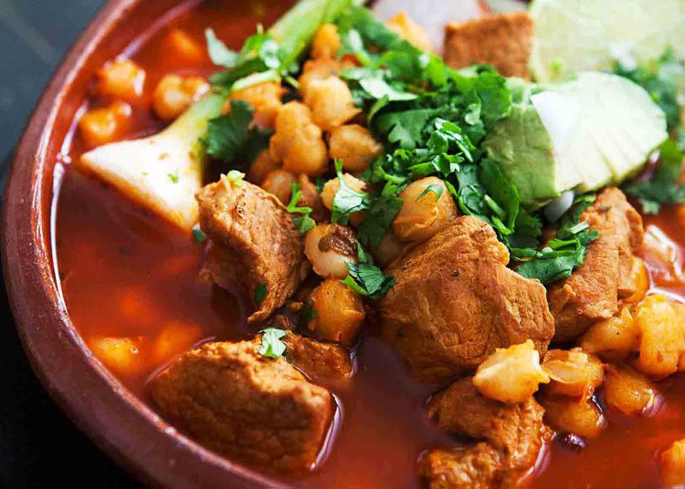

Posole

My good friend Chef Arturo Vargas, from Acapulco, Mexico, taught me how to make this soup, thanks Chef!
This pozole rojo, or "red" pozole, is made with pork shoulder or shanks, red chiles, and lots of hominy corn.
I made this for my parents, and they loved it. Mom told me she hadn't had pozole since she was a kid in Tucson. Lots of smiley faces around the table tonight.
Typically just the simple soup with pork and hominy is served, and the add-ins, or garnishes are set at the table for all to pick and put in their soup as they wish.
Ingredients:
Garnishes
Steps:
- Prep the Pork:
- In a large pot, add the pork chunks, water or chicken broth, onion, garlic, bay leaves, oregano, salt, and pepper.
- Bring to a boil, then reduce to a simmer. Let it cook for about 2-3 hours, or until the pork is tender and easily pulls apart. Skim off any foam that rises to the top.
- Prep the Chiles
- While the pork is cooking, remove stems and seeds from the dried chiles.
- In a small pot, bring water to a boil and add the chiles. Boil for 5-10 minutes or until soft, then remove and blend them with a bit of the soaking water until smooth.
- Add Hominy and Chiles:
- Once the pork is tender, remove it from the pot, shred it, and return it to the pot.
- Add the drained hominy to the pot and stir in the blended chile mixture (for red posole).
- Simmer for another 30 minutes to let the flavors blend.
- Taste and Season:
- Adjust the seasoning to taste with salt, pepper, oregano if needed.
- Serve:
- Ladle the posole into bowls, and garnish with cabbage, radishes, onion, lime, cilantro, and avocado as desired.